Tapping Into
Culture
The Beats Meet The Bites is a collaboration between Morley’s, the iconic London-based chicken shop, and Spotify, the global music streaming platform.
Fusing food, music and trend-savvy individuals, the campaign is built to resonate with Gen Z and young Millennials. Backed by QR code integrations, exclusive artist collabs and community-centered events, the partnership puts Morley’s and Spotify at the forefront of cultural relevance.
Morley’s is deeply woven into UK culture — from name-drops in tracks to familiar backdrops in music videos and interviews — and is the most popular chicken shop among Gen Z.
Here’s The
Problem
The number of takeaway and fast food spots in the UK is rising, and the market is becoming increasingly crowded.
- — Over 70% of Gen Z say music directly influences their food experience.
- — 1 in 3 Gen Z consumers are more likely to try a brand if it’s connected to music.
- — Branded collaborations, when executed well, result in 23% higher engagement than typical marketing posts.
Fuse the worlds of fast food and music into one immersive, culture-forward experience.
The
Execution
A limited-edition takeaway box, fronted by a giant chicken wearing green headphones and sunglasses next to a giant QR code.
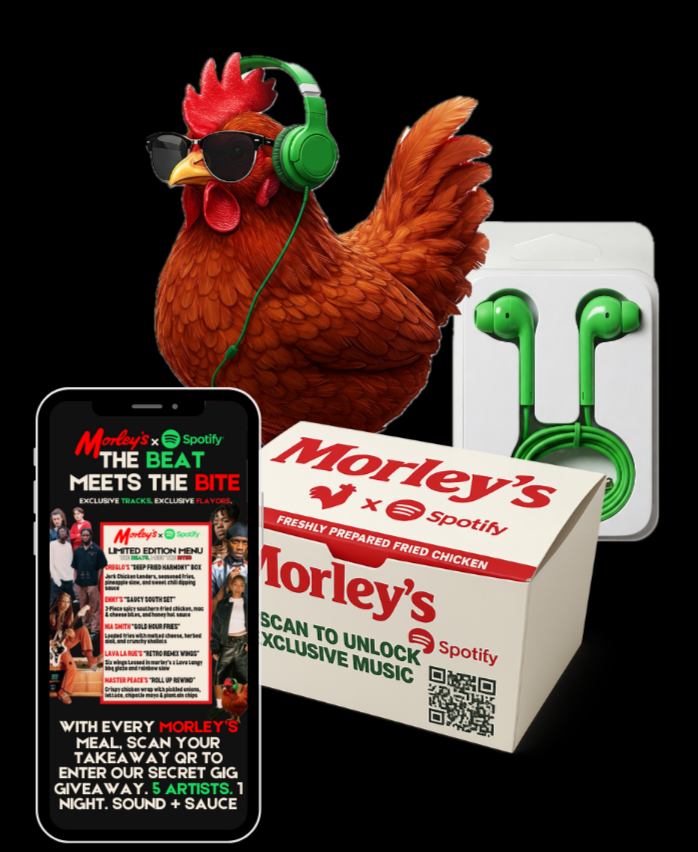
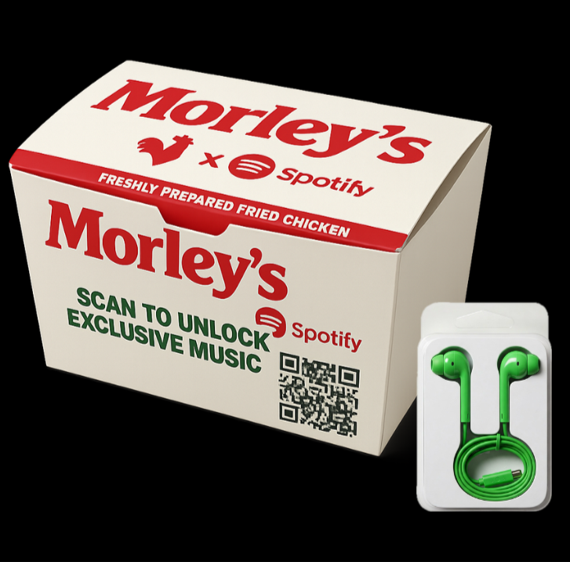
Every limited-edition takeaway box includes a QR code and comes with a free pair of green corded earbuds. Scanning the code directs customers to a curated Spotify playlist featuring all five artists, plus exclusive unreleased snippets from each.
Customers are automatically entered into a raffle for free tickets to one of five surprise concerts at the end of the campaign.
Five Emerging
UK Artists
From our survey, the target audience listens to a wide variety of genres — so finding up-and-coming artists with less than 200,000 monthly streams on Spotify was key.
| Artist | Genre |
|---|---|
| ENNY | Hip-Hop / R&B |
| Master Peace | Indie / Alternative |
| Oreglo | Jazz Fusion Band |
| Nia Smith | R&B Singer |
| Lava La Rue | Funkadelic Britpop |
Each artist has their own exclusive menu item available across all Morley’s locations for the duration of the campaign.
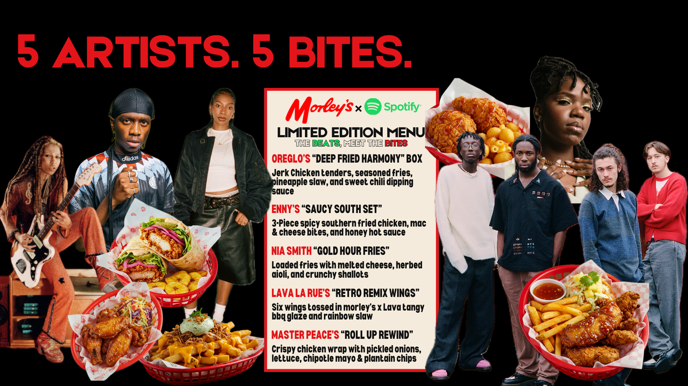
UGC
Challenge
Must post on socials to be entered for one of the five surprise concerts.
No text appears on the out-of-home advertising, staying consistent with a theme of mystery that sparks curiosity.
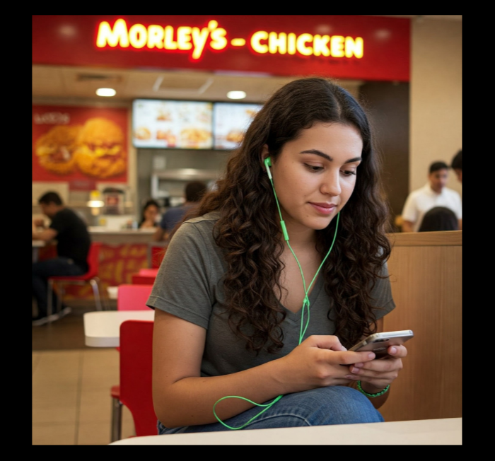
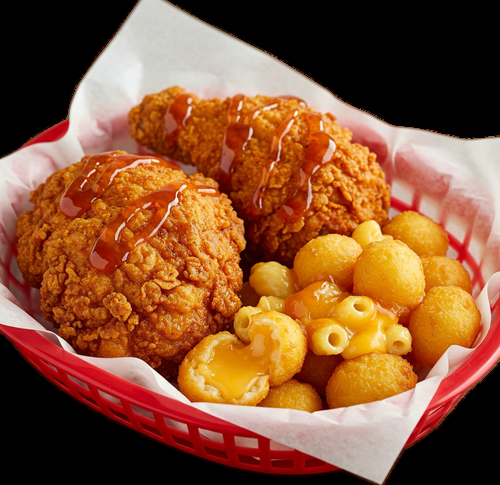
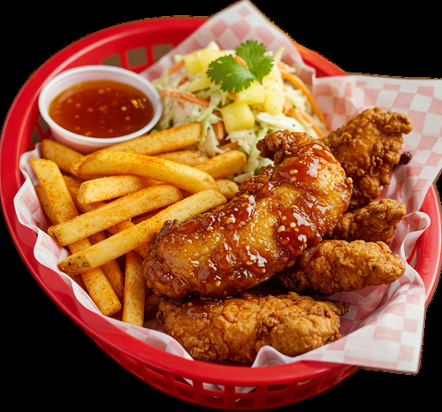
OOH
Advertising
The QR code sends viewers to a launchpad teasing the Morley’s x Spotify collab.
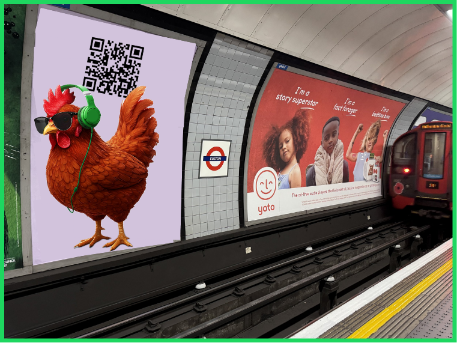
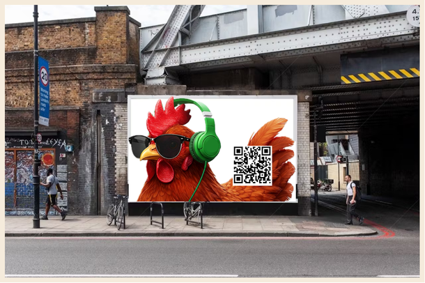
In-Store
Activation
Exclusive merch, plus redesigned stores with posters, banners and signage announcing the promotion.
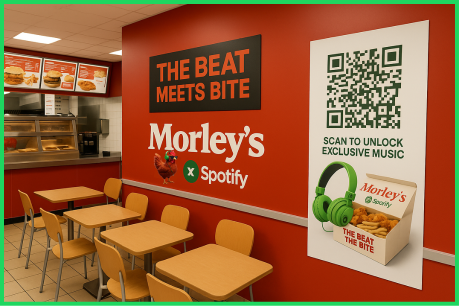
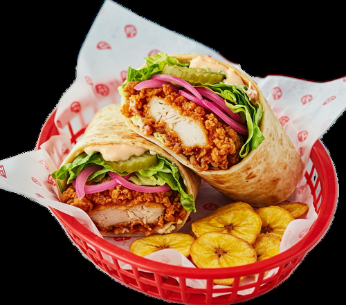
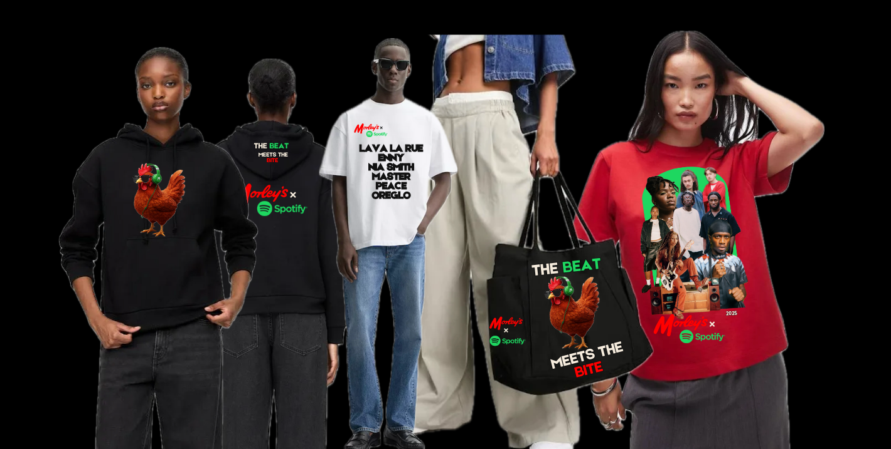
Surprise
Concert
The campaign wraps with five simultaneous shows across London Morley’s locations.
This intimate setting is available to ticket winners from the UGC Challenge, influencers and press. Each show is dispersed throughout the city of London, making it a night to remember.
Attendees won’t know which artist they’re seeing until the performance starts — boosting engagement on socials by creating hype, FOMO and organic content, and following the campaign’s theme of mystery and anticipation.
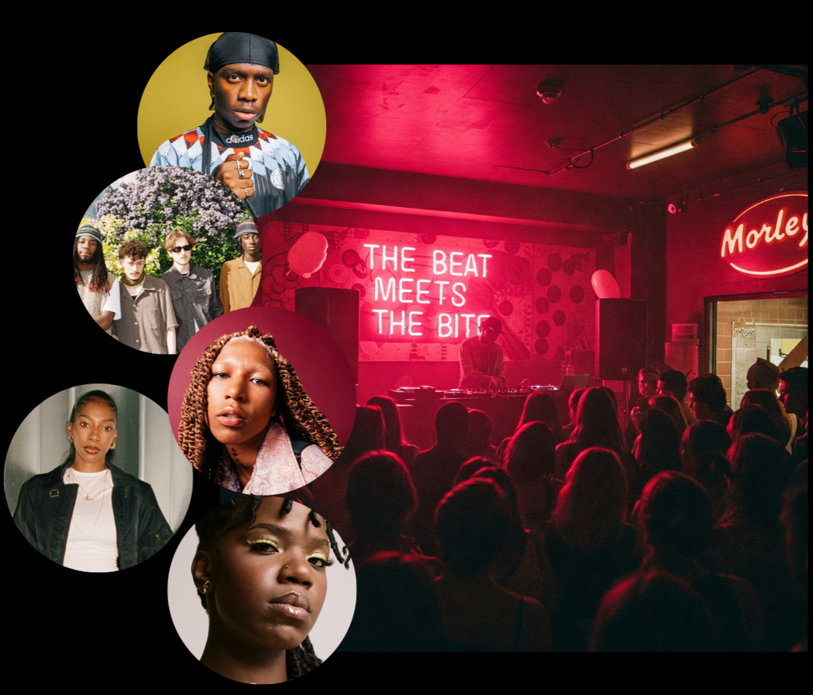